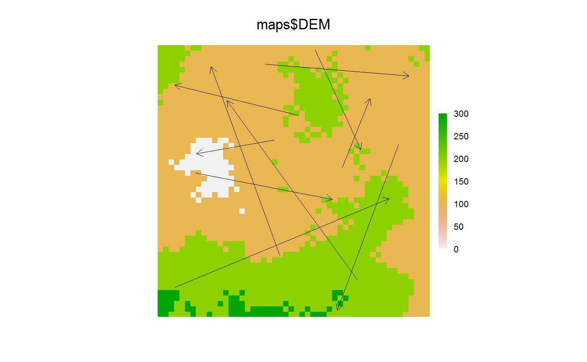

Make SpatialLines object from two SpatialPoints objects
The primary conceived usage of this is to draw arrows following the trajectories of agents.
makeLines(from, to) # S4 method for SpatialPoints,SpatialPoints makeLines(from, to)
Arguments
| from | Starting spatial coordinates ( |
|---|---|
| to | Ending spatial coordinates ( |
Value
A SpatialLines object. When this object is used within a
Plot call and the length argument is specified, then
arrow heads will be drawn. See examples.
Examples
library(sp) library(raster) # Make 2 objects caribou1 <- SpatialPoints(cbind(x = stats::runif(10, -50, 50), y = stats::runif(10, -50, 50))) caribou2 <- SpatialPoints(cbind(x = stats::runif(10, -50, 50), y = stats::runif(10, -50, 50))) caribouTraj <- makeLines(caribou1, caribou2) clearPlot()# or to a previous Plot files <- dir(system.file("maps", package = "quickPlot"), full.names = TRUE, pattern = "tif") maps <- lapply(files, raster) names(maps) <- lapply(maps, names) caribouTraj <- makeLines(caribou1, caribou2) clearPlot()